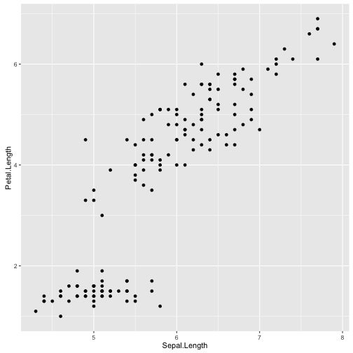

Introducing Data Science with R
week.5
謝舒凱 Lab of Ontologies, Language Processing and e-Humanities
GIL, National Taiwan University
大綱
- __
Basic R__(80min) - A glace at a data science example (20min)
- Lab session (50min)
列表 List
- 可以由不同類型的數據組合在一起。list 中的每個元素也可以有不同長度。
- create, access, manipulate
# create
v1 <- c(1:10)
v2 <- c("life", "is", "short")
m1 <- matrix(c(1:9), nrow=3)
f1 <- factor(c("positive", "negative", "negative", "neutral", "positive"))
name <- c("shukai", "shikai", "yuyun")
R <- c(60, 90, 92)
PYTHON <- c(60, 95, 93)
piano <- c("great", "ok","ok")
df1 <- data.frame(name, R, PYTHON, piano)
mylist <- list(v1,v2,m1,f1, df1)
# 命名(注意語法！)
mylist <- list(num = v1, char = v2, mat = m1, fac = f1, daframe = df1)
列表 List
## access: three ways: [[index]], [[element.name]], list$element.name
mylist[[1]]
## [1] 1 2 3 4 5 6 7 8 9 10
mylist[["num"]]
## [1] 1 2 3 4 5 6 7 8 9 10
mylist$num
## [1] 1 2 3 4 5 6 7 8 9 10
基本繪圖
library(ggplot2)
qplot(x=Sepal.Length, y=Petal.Length, data=iris)

資料的輸入輸出 Data I/O
read.table()是最基本的資料輸入函式。至少有幾個參數要了解：file, header, sep, stringAsFactors- file: 相對路徑或絕對路徑，用
/或是\\來表示。(e.g., OSX"~/dsR/data", Windows"C:\\dsR\\data") - header: 邏輯值。設成 TRUE，會將第一個 row 當成變數名。
- sep: 分隔符號。預設為空格。
- stringAsFactors: 預設是將字串的資料類型轉換成 factor 變數。想要字串被當成字串，則設成 FALSE.
- file: 相對路徑或絕對路徑，用
In-class Exercise:
traffic <- read.csv("~/dsR/data/traffic.csv", header = TRUE, fileEncoding = "big5", stringsAsFactors = FALSE)
write.csv(type_month,file = "traffic2.csv",row.names = F, fileEncoding="utf-8")
sum(is.na(traffic))
文字編碼
- 在 windows 環境下讀取含有中文字以 utf8 編碼的檔案，有兩種建議做法
# A
dat1 <- read.csv("data/ubike-sample-data-utf8.csv", fileEncoding="utf8")
## Warning in file(file, "rt", encoding = fileEncoding): 無法開啟檔案 'data/
## ubike-sample-data-utf8.csv' ：No such file or directory
## Error in file(file, "rt", encoding = fileEncoding): 無法開啟連結
# B
f <- file("data/ubike-sample-data-utf8.csv", encoding="utf8" )
dat1 <- read.csv(f)
## Warning in open.connection(file, "rt"): 無法開啟檔案 'data/ubike-sample-
## data-utf8.csv' ：No such file or directory
## Error in open.connection(file, "rt"): 無法開啟連結
Textual data preprocessing
- 使用
jiebaR(0.81 for R version 3.2.4)
library(jiebaR)
## Using default settings to initialize a worker.
cutter = worker()
segment( "給我六個小時砍樹，我會花前四個小時磨斧", cutter)
## [1] "給我" "六個" "小時" "砍樹" "我會" "花前" "四個" "小時" "磨斧"
複習時間
Rmarkdown等各種問題
Homework：自己的問卷自己分析
- 開始小組作業